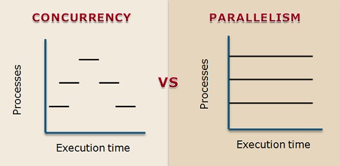

Rust-安裝環境
安裝rustup
rustup是rust版本管理器
安裝指令如下
curl --proto '=https' --tlsv1.2 -sSf https://sh.rustup.rs | sh
接著安裝rust總共有三個版可以選擇
- stable
- beta
- nightly
rustup install stable
輸入下面指令檢查版本，如果有顯示就是代表安裝成功
rustc --version
rustc 1.54.0 (a178d0322 2021-07-26)
也可以透過這個 ~/.cargo/bin 目錄查看到安裝的rust工具
ls ~/.cargo/bin
cargo cargo-clippy cargo-fmt cargo-miri clippy-driver rls rust-gdb rust-lldb rustc rustdoc rustfmt rustup
升級rust
rustup update
切換rust版本
查看目前所以安裝的版本
ls ~/.rustup/toolchains/
beta-x86_64-apple-darwin
stable-x86_64-apple-darwin
切換預設版本
rustup default beta-x86_64-apple-darwin
info: using existing install for 'beta-x86_64-apple-darwin'
info: default toolchain set to 'beta-x86_64-apple-darwin'
beta-x86_64-apple-darwin unchanged - rustc 1.55.0-beta.9 (27e88d367 2021-08-28)
針對專案設定版本
rustup override set nightly
info: using existing install for 'beta-x86_64-apple-darwin'
info: override toolchain for '/Users/ken_jan/rust/hello' set to 'beta-x86_64-apple-darwin'
beta-x86_64-apple-darwin unchanged - rustc 1.55.0-beta.9 (27e88d367 2021-08-28)
卸載rust
rustup self uninstall
如果你只是想嘗試看看，完成不想安裝，也可以使用瀏覽線上版本
相對於golang的安裝，rust官方就內建版本控制方便許多
這部分rust大勝
Rust-編輯器設定
如何設定開發環境這邊使用VSCode來當開發工具
rustfmt 自動格式化
rustfmt是Rust官方提供自動格式化代碼的工具，用來統一代碼風格，避免有人用Tab有人用空格來縮排或是在大括號之後該換行之類的
透過rustup安裝
#![allow(unused)] fn main() { rustup component add rustfmt }
透過指令來格式化代碼
#![allow(unused)] fn main() { rustfmt main.rs }
也可以透過cargo格式化整個專案
#![allow(unused)] fn main() { cargo fmt }
也可以單純檢查並列出沒排好的地放
#![allow(unused)] fn main() { rustfmt --check main.rs cargo fmt -- --check }
預設的rustfmt風格就很好用了，但如果你的團隊或是個人習慣想要不一樣排版風格也是可以的，透過rustfmt.toml設定檔來改變
例如二元運算子多行時要放在頭還是放在尾的部分
#![allow(unused)] fn main() { binop_separator = "Front" (默認) let or = foofoofoofoofoofoofoofoofoofoofoofoofoofoofoofoo || barbarbarbarbarbarbarbarbarbarbarbarbarbarbarbar; --------------------------------------------------------------- binop_separator = "Back" let or = foofoofoofoofoofoofoofoofoofoofoofoofoofoofoofoo || barbarbarbarbarbarbarbarbarbarbarbarbarbarbarbar; }
還有其他很多設定，可以參考這文件
https://github.com/rust-lang/rustfmt/blob/master/Configurations.md
讓vscode支援rust代碼提示，需要安裝Rust套件模組
https://marketplace.visualstudio.com/items?itemName=rust-lang.rust
安裝時會順便安裝rls, rust-src, and rust-analysis
如果要讓存檔時自動格式化代碼需要修改
File > Preferences > Settings. 裡面的 editor.formatOnSave 打勾 就可以了
Rust-Hello, World!
先建立一個hello的目錄，編輯main.rs
fn main() { print!("Hello, World!"); }
儲存然後在Terminal用rustc編譯
#![allow(unused)] fn main() { rustc main.rs }
會產生出main檔案，執行main就會出現Hello, world!了
./main
Hello, World!
分析程式碼
- fu是rust的關鍵字，function的簡寫
- main是函式名稱，執行rust程式時將執行，如果沒有main哪可能是一個library
- print! 是rust的巨集(macro) 如果沒有"!"表示是函示有的話則是巨集
- "Hello, world!" 表示字串內容
- 最後用";"表示語法結束
rust對大小寫是敏感的
Print! 用法
利用"{}"站位符輸出字串，類似golang的fmt.Printf("%s, %s!", "Hello", "World")
#![allow(unused)] fn main() { print!("{}, {}!", "Hello", "World") 輸出 Hello, World! }
利用"{}"站位符輸出數字，類似golang的fmt.Printf("%s: %d", "Num", 9527)
#![allow(unused)] fn main() { print!("{}: {}", "Num", 9527) 輸出 Num: 9527 }
用"\n"輸出多行字串
#![allow(unused)] fn main() { print!("Hello, World!\nHello, World!\nHello, World!") 輸出 Hello, World! Hello, World! Hello, World! }
Rust-變數
變數宣告
#![allow(unused)] fn main() { // 宣告區域變數 let local_var = 123; }
不可變變數
#![allow(unused)] fn main() { let immutable_var = 123; print!("{}", immutable_var); immutable_var = 456; print!("{}", immutable_var); }
上面這段程式碼在編譯時會出現"cannot assign twice to immutable variable"錯誤，表示不可變變數無法重新賦予值
有點類似golang中的const(常數)但又不太一樣，rust本身也有const關鍵字
可變變數
#![allow(unused)] fn main() { let mut mutable_var = 123; print!("{}", mutable_var); mutable_var = 456; print!("{}", mutable_var); }
透過在宣告變時增加mut(mutable)來讓這個變數可以重新賦予值
未變化的可變變數
#![allow(unused)] fn main() { let mut mutable_var = 123; print!("{}", mutable_var); }
如果宣告了可變變數，但是後面又沒重新賦予值時編譯會出現"help: remove this mut"警告來建議移除mut
未初始化的變數
#![allow(unused)] fn main() { let immutable_var :i32; print!("{}", immutable_var); }
編譯時會出現"use of possibly-uninitialized immutable_var"錯誤
初始化變數也可以在宣告變數之後，只要在變數使用之前初始化就可以，例如下面例子
#![allow(unused)] fn main() { let immutable_var :i32; immutable_var = 123; print!("{}", immutable_var); }
型別和可變化的改變
rust允許在變數宣告後又重新宣告相同名稱的變數，下面這些行為在rust是合法
#![allow(unused)] fn main() { let mut var = 123; print!("{}", var); var = 456; print!("{}", var); // 重新宣告為不可變變數 let var = 789; print!("{}", var); // 重新宣告為字串類型 let var = "hello word"; print!("{}", var); }
未使用的變數
#![allow(unused)] fn main() { let immutable_var = 123; }
未使用變數時會出現"help: if this is intentional, prefix it with an underscore: _immutable_var"警告，如果不想出現警告可以在變數前面加個下底線"_"
#![allow(unused)] fn main() { let _immutable_var = 123; }
或是單純只是要一個站位符也可以這樣
#![allow(unused)] fn main() { let _ = 123; }
Rust-值，變數，物件
不應將值，變數，物件混淆為一體
單詞"值"表示抽象的數學概念，
例如值："9527"是指數學9527的數學概念，在數學上"9527"只會有一個"9527"的數字
例如值："hello, word!"從概念上也只會有一個
值可以存在電腦裡的記憶體裡，可以在記憶體的多個位置儲存數字"9527"，可以有兩個不同位置都儲放"9257"
在記憶體中包含值的部分稱為物件，兩個位於記憶體中不同位置的不同物件如果包含相同的內容則可以稱為它們"相等"
在編譯Rust時，生成可以執行的程式會包含具有存儲位置和值的物件，這些物件沒有名稱 但是在程式碼中會希望將名稱與物件相關聯，以便以後可以引用它們這個東西可以稱為變數
例如
#![allow(unused)] fn main() { let num = 9527; print!("{}", num); 輸出9257 }
第一行表示：
- 它在記憶中劃出一個足夠大的物件，以包含一個整數
- 它以二進制格式將值"9527"儲存在該物件中
- 它將名稱num與該物件做關聯，以便之後在程式碼中使用該名稱num來指示這個物件
建立識別字 (Identifier) 的規則
變數名稱又稱為識別字。識別字原本在 Rust 程式中是沒有意義的，透過宣告變數這項動作對特定識別字賦予關聯。
Rust 的識別字採用以下規則：
- 第一個字元為英文或底線 _
- 第二個之後的字元為英文、數字或底線
- 只有單一的底線 _ 不是變數
以下是合 Rust 規範的變數名稱：
- a
- a1
- a_var
- aVar
- _var
Rust建議使用蛇行(snake case)命名(例:a_var_snake_name)
而非駝峰(camel case)命名(例:aVarCamelName)
跟golang顛倒，沒有好壞只要統一風格就好
Rust會對不符合其撰碼風格的變數或函式名稱發出警告訊息，但不會引發錯誤
Rust-資料型別-整數、浮點數
Rust是靜態型別語言，所以在編譯時需要知道變數的型別是什麼
前面的程式範例很多是沒有宣吿型別但是卻可以編譯，這邊用到的是透過
通常編譯器能通過數值來推導型別是什麼
Rust 有四種主要純量型別：整數、浮點數、布林以及字元
整數型別
整數是沒有小數點的數字，分有帶號(signed)跟非帶號(unsigned)，差別就是一個有負值一個沒有負值
帶號範圍-(2^n - 1) 到 (2^n - 1) - 1
非帶號範圍0到2^n - 1
isize跟usize則是依據運行環境的電腦是32位元還是還64位元決定大小
Rust預設整數型別是i32

溢位問題
Rust在執行時會檢查是否有溢位
#![allow(unused)] fn main() { let mut n: i32 = i32::max_value(); // Overflow n = n + 1; 出現panic錯誤 thread 'main' panicked at 'attempt to add with overflow' }
如果你想要讓溢位也視為正常的可以在編譯時增加參數
#![allow(unused)] fn main() { // rustc用法 rustc -O main.rs // cargo用法 cargo build --release }
浮點數型別
浮點數只有兩種型別
- f32 32位元大小
- f64 64位元大小
浮點數是依照 IEEE-754
Rust預設浮點數型別是f64
Rust-資料型別-布林值
Rust 為了表示真假值，使用關鍵字true和false
這樣的關鍵字具有非數字類型的表達式稱為布林
例
#![allow(unused)] fn main() { let true_var = true; let false_var = false; print!("{} {}", true_var, false_var); 輸出 true false }
除了關鍵字true和false賦予值也可以透過比較運算表達式來賦予值
例
#![allow(unused)] fn main() { let true_var = 456 > 123 ; let false_var = -456 >= 123; print!("{} {} {}", true_var, false_var, -123 < 123); 輸出 true false true }
比較運算子如下：
-
==：等於
-
!=：不等於
-
<：小於
-
：大於
-
<=：小於或是等於
-
=：大於或是等於
跟常見語言都一樣
除了比較數字之外也能比較字串
例
#![allow(unused)] fn main() { print!("{} {} {}", "efg" < "efgh", "efg" < "efh", "D" < "d"); 輸出 true true true }
字串的比較規則就是比較兩個字串的第一個字母，然後繼續比較兩個字串相同位置的字母直到發生下列情況之一：
- 如果兩個字母都沒有其他字母了，則相等
- 如果一個字串沒有其他字母，而另一個還有其他字母，則較少字母的字串較小
- 如果兩個字串相同位置的字母比較，字母表在前的比較小，字母大寫比字母小寫小
邏輯運算子如下：
- !：not
- &&：且
- ||：或
#![allow(unused)] fn main() { let true_var = true; let false_var = false; print!("{} {}", !true_var, !false_var); 輸出 false true print!("{} {} {} {}", true_var && true_var, false_var && false_var, true_var && false_var, false_var && true_var); 輸出 true false false false print!("{} {} {} {}", true_var || true_var, false_var || false_var, true_var || false_var, false_var || true_var); 輸出 true false true true }
Rust-資料型別-字元.字串
Rust的char型別是最基本的字母型別，用單引號包起來
例
#![allow(unused)] fn main() { let a = 'b'; }
Rust的字串分兩種
- str
- String
嚴格來講Rust在核心語言中只有一個字串型別，哪就是切片字串(&str)是不可變的(stack)
String則是Rust標準函式庫提供的型別，String是可變(Heap)
例
#![allow(unused)] fn main() { // &str型別 let str_var = "字串"; // String型別 let string_var = str_var.to_string(); // String型別 let string_var = String::from("字串"); }
索引字串切片
因為字串是使用 UTF-8 編碼，每個字符可能有多個位元組所以用字串索引會容易出現錯誤
#![allow(unused)] fn main() { let str_var = "安安"; println!("{}", &str_var[0..1]); 會出現錯誤 thread 'main' panicked at 'byte index 1 is not a char boundary; it is inside '安' (bytes 0..3) of `安安`' }
比較好得做法透過as_bytes或是chars方法來取直
#![allow(unused)] fn main() { let str_var = "安安你好啊"; for b in str_var.as_bytes() { print!("{}, ", b); } for c in str_var.chars() { print!("{}, ", c); } 輸出 229, 174, 137, 229, 174, 137, 228, 189, 160, 229, 165, 189, 229, 149, 138, 安, 安, 你, 好, 啊, }
字串相加，這邊會使用到&借用，後面會講解
#![allow(unused)] fn main() { let string1_var = String::from("安安"); let string2_var = String::from("你好啊"); println!("{}", string1_var + &string2_var); 輸出 安安你好啊 }
Rust沒有提供型別判斷的方法，如果想要知道變數是什麼型別可以利用編譯時的錯來查看
例
#![allow(unused)] fn main() { // char型別 let char_var = 'c'; char_var.not_found; 出現錯誤 `char` is a primitive type and therefore doesn't have fields // &str型別 let str_var = "str"; str_var.not_found; 出現錯誤 no field `not_found` on type `&str` }
Rust-資料型別-複合型別
複合型別是指多個數值組為一個型別
Rust 有兩個基本複合型別
元組型別(tupl)
元組型別是指將多個不同型別組成一個複合型別
固定長度，宣告好就無法增減長度
每一格都是一個獨立型別
#![allow(unused)] fn main() { // 宣告時就指定型別 let tup: (i32, f64, u8, &str) = (1, 3.1417, 1, "hello"); // 自動判斷型別的宣告方式 let tup = (1, 3.1417, 1, "hello"); println!("{:?}", tup); 輸出 (1, 3.1417, 1, "hello") // 多維元組 let tup = ("1", ("2", ("3"))); }
元組也可以透過解構(destructuring)拆分各個型別
#![allow(unused)] fn main() { let tup: (i32, f64, u8, &str) = (1, 3.1417, 1, "hello"); // 解構成各個變數 let (a, b, c, d) = tup; println!("{} {} {} {}", a, b, c, d); 輸出 1 3.1417 1 hello }
也可以透過"."再加上索引位置來取得元組內的值
#![allow(unused)] fn main() { let tup: (i32, f64, u8, &str) = (1, 3.1417, 1, "hello"); // 索引從0開始 println!("{} {} {} {}", tup.0, tup.1, tup.2, tup.3); 輸出 1 3.1417 1 hello }
陣列型別(array)
和元組一樣固定長度，差別是陣列中的型別必須要一樣的
#![allow(unused)] fn main() { // 宣告時指定型別和長度i32是型別;之後的5是陣列的長度 let array: [i32; 5] = [1, 2, 3, 4, 5]; // 自動判斷型別的宣告方式 let array = [1, 2, 3, 4, 5]; // 簡化的宣告方式，陣列裡全是hello長度為5 let array = ["hello"; 5]; }
透果索引位址取值的方式
#![allow(unused)] fn main() { let a = [1, 2, 3, 4, 5]; println!("{} {} {} {} {}", a[0], a[1], a[2], a[3], a[4]); 輸出 1 2 3 4 5 }
Rust-流程控制-if
利用布林值來決定如何繼續執行程式進行決策
例
#![allow(unused)] fn main() { let n = 3; if n > 2 { println!("執行") } }
if 跟其他語言差不多，if關鍵字後面布林求值稱為條件只有當true才會執行大括號裡面的語法
大括號裡面可以包含零個多個語法，用大括號包起來的稱為塊(block)
條件必須是布林類型，因此不允許下面的語法
#![allow(unused)] fn main() { // 不允許 if 1 { print!("執行"); } }
條件不需要用小括號包起來，會出現警告
#![allow(unused)] fn main() { // 出現警告 if (3 > 2) { println!("執行") } }
條件之後需要一個塊(block)包起來
#![allow(unused)] fn main() { // 不允許 i 3 > 2 println!("執行") }
如果要在條件為false情況執行流程可以使用else關鍵字
#![allow(unused)] fn main() { let n = 3; if n > 5 { println!("執行") } else println!("false執行") } 輸出 false執行 }
Rust也有類似PHP的三元運算
#![allow(unused)] fn main() { let n = 3; let str = if n > 2 { "true_str" } else { "false_str" }; println!("{}", str); 輸出 true_str }
以下範例是不允許的
#![allow(unused)] fn main() { // 不允許，因為無法定義str的型別 let str = if true { "true_str" } // 不允許，因為型別不一樣，一個是字串一個是數字 let str = if true { "true_str" } else { 9527 } }
Rust-流程控制-while
類似PHP的while迴圈，計算其後的布林條件如果是值為true則執行大括號下面的語法，會重複條件的檢查執行直到條件值為false為止或是其他原因退出
假設要打印1到100的整數可以使用下面的語法來達到
#![allow(unused)] fn main() { let mut i = 1; while i <= 100 { print!("{} ", i); i += 1; } 輸出 1 2 3 4 5 ... 100 }
雖然Rust沒有do while的語法但也有break contiune語法
例如只想印出雙數
#![allow(unused)] fn main() { let mut i = 1; while i <= 100 { i += 1; if i % 2 != 0 { continue; } print!("{} ", i); } 輸出 2 4 6 8 10 ... 100 }
或是碰到50的值就中斷退出
#![allow(unused)] fn main() { let mut i = 1; while i <= 100 { if i == 50 { break; } print!("{} ", i); i += 1; } 輸出 1 2 3 4 5 ... 49 }
無限循環(loop)
如果要執行無限循環的迴圈直到程式被強制中斷或是通過退出循環語法break，可以透過loop語法
#![allow(unused)] fn main() { // 透過whilce 會出現警告 let mut i = 1; while true { if i == 50 { break; } i += 1; } // 透過loop let mut i = 1; loop { if i == 50 { break; } i += 1; } }
Rust-流程控制-for
如果想印出1到100的數字，更常的做法是使用for迴圈而不是while
例
#![allow(unused)] fn main() { for i in 1..101 { println!("{}", i); } 輸出 1 2 3 4 5 ... 100 }
for和in是關鍵字在用兩個數字加".."符號分隔
i變數一開始由第一個數字(1)賦予該值，然後i值依序的加1直到值達到第二數字(101)，當值到達第二數是"不"執行的並結束for迴圈，所以要1到100需要寫1..101
i是for迴圈的區域變數所以前面如果有宣告都會被忽略，而且在迴圈結束就銷毀
例
#![allow(unused)] fn main() { let i = 99; // 被屏蔽的 for i in 0..11 { // 這裡的i是區域變數 print!("{} ", i); } // 這裡的i是一開始宣告的99 print!("{}", i); 輸出 0 1 2 3 4 5 6 7 8 9 10 99 }
for迴圈也可以用來遍歷集合的每個元素
例
#![allow(unused)] fn main() { let set = [1, 2, 3, 4, 5]; for var in set { print!("{} ", var); } 輸出 1 2 3 4 5 }
或是反轉範圍從100印到1
例
#![allow(unused)] fn main() { for var in (1..101).rev() { print!("{} ", var); } 輸出 100 99 98 97 96 ... 1 }
Rust-枚舉(enumeration)
枚舉就是列出有窮序列的型別
透過enum關鍵字新增了新的Browser型別在範例中列出了一個組項分別為
Firefox，Chrome，IE，Safari內部值分別為0u8，1u8，2u8，3u8表示
通常都是以整數為內部關聯值
透過枚舉寫以下的代碼
#![allow(unused)] fn main() { enum Browser { Firefox, Chrome, Ie, Safari, } let browser = Browser::Ie; match browser { Browser::Firefox => println!("F"), Browser::Chrome => println!("C"), Browser::Ie => println!("I"), Browser::Safari => println!("S"), } }
不要編寫這樣的代碼
#![allow(unused)] fn main() { const FIREFOX: u8 = 0; const CHROME: u8 = 1; const IE: u8 = 2; const SAFARI: u8 = 3; let browser = IE; if browser == FIREFOX { println!("F"); } else if browser == CHROME { println!("C"); } else if browser == IE { println!("I"); } else if browser == SAFARI { println!("S"); } }
再怎樣也不要寫magic number
如何使用枚舉
使用Use的方式
#![allow(unused)] fn main() { // 顯式的指定要使用的枚舉 use Browser::{Chrome, Firefox, Ie, Safari}; let browser = Ie; match browser { Firefox => println!("F"), Chrome => println!("C"), Ie => println!("I"), Safari => println!("S"), } // 自動的使用Browser內部所有的枚舉 use Browser::*; let browser = Ie; match browser { Firefox => println!("F"), Chrome => println!("C"), Ie => println!("I"), Safari => println!("S"), } }
使用帶有C風格的用法
#![allow(unused)] fn main() { enum Browser { Firefox, Chrome, Ie, Safari, } println!("{}", Browser::Firefox as i32) }
枚舉不能使用"=="運算子做比較
#![allow(unused)] fn main() { let browser = Browser::Ie; if browser == Browser::Ie { println!("{}", "hello word") } // 編譯時會出錯 // binary operation `==` cannot be applied to type `Browser` }
Rust-Match控制流運算子
Match是使用枚舉的基本工具，類似Golang的Switch語法
Match取值後對每個條件進行比較依照順序比較，一但匹配成功就對右側求值，並結算Match語法
每個條件分支右側都必須是單個表達式
例
前面三個都是無效的表達式
#![allow(unused)] fn main() { match browser { Firefox => let var = 777;, // 無效的表達式 Chrome => let var = 777, // 無效的表達式 Ie => fu funct() {}, // 無效的表達式 Safari => println!("S"), } }
如果需要在右側好幾個表達式或是非表達式可以用塊來包起來
例
#![allow(unused)] fn main() { enum Browser { Firefox, Chrome, Ie, Safari, } let browser = Browser::Ie; match browser { Browser::Firefox => { browser = Browser::Ie; println!("F"); }, Browser::Chrome => { let var = 777; println!("C") }, Browser::Ie => println!("I"), Browser::Safari => println!("S"), } }
處理所有可能
#![allow(unused)] fn main() { enum Browser { Firefox, Chrome, Ie, Safari, } let browser = Browser::Ie; match browser { Browser::Ie => println!("I"), Browser::Safari => println!("S"), } // 編譯時會出 patterns `Firefox` and `Chrome` not covered }
因為少了Firefox和Chrome條件分支，Rust要求mtch需要顯式的處理所有可能的情況
可以使用空處理
#![allow(unused)] fn main() { let browser = Browser::Ie; match browser { Browser::Firefox => {}, // 使用空處理 Browser::Chrome => {}, // 使用空處理 Browser::Ie => println!("I"), Browser::Safari => println!("S"), } }
或是使用"_"下底線，類似Golang的Default
#![allow(unused)] fn main() { let browser = Browser::Ie; match browser { Browser::Ie => println!("I"), Browser::Safari => println!("S"), _ => {}, } }
如果Default放在條件最上面會因為順序關係什麼都不處理
#![allow(unused)] fn main() { let browser = Browser::Ie; match browser { _ => {}, // 永遠都跑到這裡 Browser::Ie => println!("I"), Browser::Safari => println!("S"), } }
對型別使用Match
match除了對枚舉之外也可以對一般型別
#![allow(unused)] fn main() { match "value" { "value" => println!("value"), _ => println!("other"), } match 1 { 1 => println!("one"), 2 => println!("two"), 3 => println!("three"), _ => println!("other"), } }
因為型別不像枚舉有可窮舉出所有，所以一定需要"_"(Default) 條件，不然編譯會出現錯誤
Rust-結構體(Struct)
struct 是命名並封裝數個欄位數值所組合的自訂型別
struct 有 3 種類型
- 元組結構體(tuple struct)，就是具名元組而已
- 經典的C語言風格結構體(C struct)
- 單元結構體(unit struct)，不帶字段，在泛型中很有用
前幾篇所講的元組型別(tupl)，只要元組包含少量的字段就很好用但是當字段一多就容易將它們搞混 並且代碼也很容易理解
例如下面的代碼，不能很輕易的知道哪個字段相加，而且元組型別是有序的如果在開頭增加字段哪變成後面的字段都需要往後遞延非常不直覺
#![allow(unused)] fn main() { let data = (1, 'a', 'b', 199.199, true, -100); println!("{}", data.0 + data.5); }
這時候使用結構體(Struct)就非常有用，可以為字段命名並標示型別
它以struct關鍵字開頭後面接著要聲明的類型再以大括號包起來
例如
#![allow(unused)] fn main() { // 經典的C語言風格結構體(C struct) struct User { username: String, email: String, active: bool, } let user = User { email: String::from("user@usermail.com"), username: String::from("user123"), active: true, }; println!("{} {} {}", user.email, user.username, user.active) }
元組結構，擁有元組型別和結構兩個特性又不完全一樣
- 需要事先聲明
- 字段沒有名稱
實際上這種結構不常使用
#![allow(unused)] fn main() { struct User(String, String, bool); let user = User( String::from("user@usermail.com"), String::from("user123"), true, ); println!("{} {} {}", user.0, user.1, user.2) }
單元結構體
單元結構體適合用在當要實作一個特徵(trait)或某種型別，但沒有任何需要儲存在型別中的資料
#![allow(unused)] fn main() { struct AlwaysEqual; let subject = AlwaysEqual; }
Rust-定義函式Function(一)
如果編寫多次相同的代碼，則可以把代碼封裝在一個塊中，然後為該代碼命名
通過這種方式就定義了函式，然後可以通過命名的名稱來調用該函式
要訂一個函式需要使用"fn"關鍵字後面接著函式的名稱跟圓括號然後是一個大括號塊
大括號的塊稱為函式體，函式體之前都稱為簽名
下面例子簡單使用函式
#![allow(unused)] fn main() { fn hello_word() { println!("hello word!") } hello_word(); hello_word(); hello_word(); 輸出 hello word! hello word! hello word! }
後定義函式
#![allow(unused)] fn main() { a; let a = 5; // 非法使用變數 hello_word(); // 合法使用後定義的函式 fn hello_word() { println!("hello word!") } }
函式屏蔽其他函式
#![allow(unused)] fn main() { fn hello_word() {} fn hello_word() {} // 多次定義函式 編譯時會出錯 the name `hello_word` is defined multiple times }
但是可以包在塊裡多次定義fn
#![allow(unused)] fn main() { { fn hello_word() { println!("hello word 1") } hello_word(); } { fn hello_word() { println!("hello word 2") } hello_word(); } 輸出 hello word 1 hello word 2 }
每個定義函式只能在塊裡面有效，下面是不合法的
#![allow(unused)] fn main() { { fn hello_word() { println!("hello word 2") } } hello_word(); 編譯時會出錯 cannot find function `hello_word` in this scope }
也可以在屏蔽外的塊級定義另一個函式
在main外部定義函式hello_word()，因其內部也定義了hello_word，所以永遠用不到外部的定義函式
通常編譯器會警告
fn hello_word() { println!("hello word 1") } fn main() { hello_word(); { hello_word(); fn hello_word() { println!("hello word 2") } } hello_word(); fn hello_word() { println!("hello word 3") } }
這邊輸出
hello word 3
hello word 2
hello word 3
Rust-定義函式Function(二)
函式傳遞參數
每次調用函式時都打印相同的hello word的函式不是很有用處
這時候可以傳遞參數給函式會顯得更有意義
#![allow(unused)] fn main() { fn hello_word(name: String) { println!("{} hello", name) } hello_word(String::from("Mike")); 輸出 Mike hello }
函式參數的定義與變數定義非常相似
因此可以將面的函式解釋為
#![allow(unused)] fn main() { { let name: String = String::from("Mike"); println!("{} hello", name) } }
變數的定義與函式參數的定義主要的差別在於函式定義需要明確的指定類型
變數的定義可以依賴類型推斷
編譯器會使用類型推斷來檢查參數值是否合法
#![allow(unused)] fn main() { fn f(c: i16) {} f(5.); // 非法因為是浮點數 f(5u16); // 非法因為是u16型別 f(5i16); // 合法 f(5); // 合法因為傳遞是無約束得整數類型參數會變函式限制為i16類型 }
函式按"值"傳遞參數
參數不僅僅是傳遞物件的新名稱是傳遞物件的副本，此副本在調用函式時創建並在函式結束且控制返回到調用者時銷毀它
例如下面
#![allow(unused)] fn main() { fn test(mut f: f64) { f *= 10.; println!("{}", f) } let f = 5.; test(f); println!("{}", f); 輸出 50 5 }
在一開始就宣告的f變數在傳遞給test函式的，並在函式中保留使用f變數並更改變數得值並打印，函式結束反給調用者，然侯在印出f變數，這個變數與調用時一樣
實際上傳遞給函式的不是這個變數而是變數的"值"並在函式結尾時銷毀
函式返回值
函式除了能接收參數之外還可以計算結果並返回給調用者
#![allow(unused)] fn main() { fn test(f: f64) -> f64 { return f * 10.; } println!("{}", test(5.)); }
返回值需要再函式簽名之後用"→"並指定型別
Rust-定義函式Function(三)
提前退出
正常情況是必須達到函示的末尾，但是如果編寫包含許多語法的函式通常會在意識到沒有更多計算要做時因此需要提前退出該函式
#![allow(unused)] fn main() { fn f(x: i32) -> i32 { if x <= 0 { return 0; } return x * 5; } println!("{} {}", f(10), f(0)) 輸出 50 0 }
返回多個值
如果要從函式返回多個值，可以使用元組型別
#![allow(unused)] fn main() { fn f(x: i32) -> (i32, i32) { return (x * 5, 10); } println!("{:?}", f(10)) 輸出 (50, 10) }
或是也可以用返回結構，元組結構，數組或是向量來返回多個
更改調用者的變數
假設有個包含數字的數組，要更改其中的數字
#![allow(unused)] fn main() { fn f(mut a: [i32; 5]) { for i in 0..5 { if a[i] > 0 { a[i] *= 2; } } } let mut arr = [5, -1, 2, -2, 8]; f(arr); println!("{:?}", arr); 輸出 [5, -1, 2, -2, 8] }
可以看到並沒有改變數組，並且在編譯時出現警告variable does not need to be mutable
告訴我們mut聲明arr之後卻沒有改變可以移除
比較麻煩的作法，可以透過回傳值回傳一個新的數組，缺點就是數組會複製兩次
#![allow(unused)] fn main() { fn f(mut a: [i32; 5]) -> [i32; 5] { for i in 0..5 { if a[i] > 0 { a[i] *= 2; } } return a; } let mut arr = [5, -1, 2, -2, 8]; arr = f(arr); println!("{:?}", arr); 輸出 [10, -1, 4, -2, 16] }
可以透過引用傳遞參數的方式來改變數組
#![allow(unused)] fn main() { fn f(a: &mut [i32; 5]) { for i in 0..5 { if (*a)[i] > 0 { (*a)[i] *= 2; } } } let mut arr = [5, -1, 2, -2, 8]; f(&mut arr); println!("{:?}", arr); 輸出 [10, -1, 4, -2, 16] }
透過&符號來表示物件記憶體位址，而使用*符號表示記憶體位址的物件
通過型別宣告&mut [i32; 5]指定它是物件的地址(可以稱為指針Pointer或是引用reference)
這邊的使用跟C++使用很像，區別是Rust還允許顯式的取消引用可以省略*符號
這個函式等同於上面
#![allow(unused)] fn main() { fn f(a: &mut [i32; 5]) { for i in 0..5 { if a[i] > 0 { // 省略了* a[i] *= 2; // 省略了* } } } let mut arr = [5, -1, 2, -2, 8]; f(&mut arr); println!("{:?}", arr); 輸出 [10, -1, 4, -2, 16] }
Rust-定義泛型函式
Rust是強型別語言，執行嚴格的資料型別檢查，因此當定義使用某種型別參數的函式時比如說
#![allow(unused)] fn main() { square(x: f32) -> f32 }
調用函式的程式碼必須傳遞一個嚴格屬於這種型別的表達式例如
#![allow(unused)] fn main() { square(1.3414f32) }
或者是每次使用該函式時都執行顯式的型別轉換例如
#![allow(unused)] fn main() { square(1.3414f64 as f32) }
對於使用的人非常不方便，對於編寫該函式的人也不方便
由於Rust有很多數字類的型別，如果決定了參數型別是i32型別但每次調用幾乎都是用i64哪最好是更改參數型別為i64，而且如果函式有多個模塊或是多個程式在使用則很難滿足每個調用者的需求
例如
#![allow(unused)] fn main() { fn f(s: char, n1: i16, n2: i16) -> i16 { if s == '1' { return n1; } return n2; } println!("{}", f('1', 10, 20)); 輸出 10 }
這時候想用f32當參數肯定是無法使用這函式，但總不能為了這個需求又寫了邏輯一樣的函式只差在參數不同，這時候就可以使用泛型函式了
定義泛型函式
fn main() { println!("{}", f::<i16>('1', 10, 20)); println!("{}", f::<f32>('1', 10.1, 20.1)); } fn f<T>(s: char, n1: T, n2: T) -> T { if s == '1' { return n1; } return n2; } 輸出 10 10.1
這個函式既可以輸入i16也可以輸入f32當參數了
在定義函式中，函式名之後用<>包起來字母T，該字母為函式宣告的型別參數
這個表示宣告的不是具體函式而是由T型別參數來參數化的泛型函式，只有在編譯時為該T參數指定具體型別時該函式才成為具體函式
在使用泛型函式需要將T參數替換成實際使用f::的型別來護得具體函式
上面例子有三個地方宣告成T型別，在使用時需要三個都是相同型別不然在編譯時會出現錯誤
推斷參數型別
可以透過Rust的型別推斷簡化成下面使用範例
fn main() { println!("{}", f('1', 10, 20)); // 透別推斷型別簡化 println!("{}", f('1', 10.1, 20.1)); // 透別推斷型別簡化 } fn f<T>(s: char, n1: T, n2: T) -> T { if s == '1' { return n1; } return n2; }
Rust-定義泛型結構
既然有泛型函數當然少不瞭泛型結構
#![allow(unused)] fn main() { struct S1<T1, T2> { n1: T1, n2: T2, } let s = S {n1:957, n2:996.1} }
第一句語法宣告了兩個型別T1和T2參數化的泛型結構S1，第一個字段n1為T1第二字段n2為T2
第二句語法n1字段的參數隱式的替換成i32，n2字段的參數隱式替換成f64
也可以使用泛型元組結構
#![allow(unused)] fn main() { struct SE<T1, T2> (T1, T2) let se = SE (957, 996.1) }
泛型機制
通過下面程式碼來理解編譯泛型機制概念
#![allow(unused)] fn main() { fn swap<T1, T2>(p1: T1, p2: T2) -> (T2, T1) { return (p2, p1); } let x = swap(5i16, 9u16); let y = swap(6f32, true); println!("{:?} {:?}", x, y); 輸出 (9, 5) (true, 6.0) }
第一階段編譯器會掃描程式碼並且每次找到泛型函式宣告(swap)時，它在資料結構中加載該函式內部表示形式檢查泛型程式碼是否有語法錯誤
第二階段編譯器再次掃描程式碼在每次遇到泛型函式調用時，編譯器都會檢查此類用法與泛型宣告的相應內部表示關聯，在確認後再其資料結構中加載這種對應關係
第三階段再將掃描所有泛型函式調用，對於每個泛型函式調用者都定義每個泛型參數的具體型別，這種具體型別可以是在用法中顯式的或者如上面範例一樣用推斷出來的
在確定替換泛型參數的具體型別之後都會產生泛型函式的具體版本對應程式碼如下
#![allow(unused)] fn main() { fn swap_i16_u16(p1: i16, p2: u16) -> (u16, i16) { return (p2, p1); } fn swap_f32_bool(p1: f32, p2: bool) -> (f32, bool) { return (p2, p1); } let x = swap_i16_u16(5i16, 9u16); let y = swap_f32_bool(6f32, true); println!("{:?} {:?}", x, y); }
泛型編譯有幾個特點
- 與非泛型程式碼相比多階段編譯相對較慢一些
- 生成的程式碼針對每個特定的調用進行高度優化，它完成使用調用者使用的型別無須進行轉換因此優化了運行時性能
- 泛型函式如果執行很多具有不同型別參數的調用，則產生大量的機器代碼，最好不要再單個函式調用太多型別會給CPU緩存造成負擔
幾種流行的泛型語言的代價 Slow Compiler: c++/rust Slow Performance: java/scala Slow Programmer: go1
Rust-所有權(一)
所有權可以說是Rust核心概念，這讓Rust不需要垃圾回收(garbage collector)就可以保障記憶體安全。Rust的安全性和所有權的概念息息相，因此理解Rust中的所有權如何運作是非常重要的
所有權的規則
- Rust 中每個數值都會有一個變數作為它的擁有者（owner）。
- 同時間只能有一個擁有者。
- 當擁有者離開作用域時，數值就會被丟棄。
變數作用域
用下面這段程序描述變數範圍的概念
#![allow(unused)] fn main() { { // 在宣告以前，變數s無效 let s = "hello"; // 這裡是變數s的可用範圍 } // 變數範圍已經結束，變數s無效 }
變數作用域是變數的一個屬性，其代表變數的可使用範圍，默認從宣告變數開始有效直到變數所在作用域結束。
記憶體與分配
定義一個變數並賦予值，這個變數的值存在記憶體中，例如需要用戶輸入的一串字串由於長度的不確定只能存放在堆(heap)上，這需要記憶體分配器在執行時請求記憶體並在不需要時還給分配器
在擁有垃圾回收機制(garbage collector, GC)的語言中，GC會追蹤並清除不再使用的記憶體，如果沒有GC的話則需要在不使用時顯式的呼叫釋放記憶體
例如C語言
#![allow(unused)] fn main() { { char *s = strdup("hello"); free(s); *// 釋放s資源* } }
Rust選擇了一個不同的道路，當變數在離開作用域時會自動釋放例如下面
#![allow(unused)] fn main() { { let s = String::from("hello"); // s 在此開始視為有效 // 使用 s } // 此作用域結束，釋放s變數 }
當變數離開作用域(大括號結束)時會自動呼叫特殊函示drop來釋放記憶體
變數與資料互動的方式
移動(Move)
變數可以在Rust中以不同的方式與相同的資料進行互動
#![allow(unused)] fn main() { let x = 100; let y = x; }
這個代碼將值100綁定到變數x，然後將x的值復制並賦值給變數y現在棧(stack)中將有兩個值100。此情況中的數據是"純量型別"的資料，不需要存儲到堆中，僅在棧(stack)中的資料的"移動"方式是直接複製，這不會花費更長的時間或更多的存儲空間。"純量型別"有這些：
- 所有整數類型，例如 i32 、 u32 、 i64 等
- 布爾類型 bool，值為true或false
- 所有浮點類型，f32和f64
- 字符類型 char
- 僅包含以上類型數據的元組(Tuples)
現在來看一下非純量型別的移動
#![allow(unused)] fn main() { let s1 = String::from("hello"); let s2 = s1; }
String物件的值"hello"為不固定長度長度型別所以被分配到堆(heap)
當s1賦值給s2，String的資料會被拷貝，不過我們拷貝是指標、長度和容量。我們不會拷貝指標指向的資料
前面説當變數超出作用域時，Rust自動調用釋放資源函數並清理該變數的記憶體。但是s1和s2都被釋放的話堆(heap)區中的"hello"被釋放兩次，這是不被系統允許的。為了確保安全，在給s2賦值時 s1已經無效了
#![allow(unused)] fn main() { let s1 = String::from("hello"); let s2 = s1; println!("{}, world!", s1); // 會發生錯誤 s1已經失效了 }
克隆(clone)
正常情況下Rust在較大資料上都會以淺拷貝的方式，當然也有提供深拷貝的method
#![allow(unused)] fn main() { let s1 = String::from("hello"); let s2 = s1.clone(); println!("{} {}", s1, s2); 輸出 hello hello }
Rust-所有權(二)
所有權與函式
將一個變數當作函式的參數傳給其他函式，怎樣安全的處理所有權
傳遞數值給函式這樣的語義和賦值給變數是類似的。傳遞變數給函式會是移動或拷貝就像賦值一樣
fn main() { // s被宣告 let s = String::from("hello"); // s進入作用域 takes_ownership(s); // s的值被當作參數傳入函式 所以可以當作s已經被移動，從這開始已經無效 // x被宣告 let x = 5; // x進入作用域 makes_copy(x); // x的值被當作參數傳入函式，但x是純量型別 i32被copy，依然有效 } // 函式結束，x無效，接著是s的值已經被移動了它不會有任何動作 fn takes_ownership(some_string: String) { // 一個String參數some_string傳入，有效 println!("{}", some_string); } // 函式結束，參數some_string佔用的記憶體被釋放 fn makes_copy(some_integer: i32) { // 一個i32參數some_integer傳入，有效 println!("{}", some_integer); } // 函式結束，參數some_integer是純量型別，沒有任何動作發生
如果在呼叫takes_ownership之後在使用s變數在編譯時會出錯
回傳值與作用域
回傳值轉移所有權
fn main() { let s1 = gives_ownership(); // gives_ownership移動它的回傳值給s1 let s2 = String::from("哈囉"); // s2進入作用域 let s3 = takes_and_gives_back(s2); // s2移入takes_and_gives_back，該函式又將其回傳值移到s3 } // s3 在此離開作用域並釋放 // s2 已被移走，所以沒有任何動作發生 // s1 離開作用域並釋放 // 此函式回傳一個String fn gives_ownership() -> String { let some_string = String::from("hello"); // some_string進入作用域 return some_string; // 回傳some_string並移動給呼叫它的函式 } // 此函式會取得一個String然後回傳它 fn takes_and_gives_back(a_string: String) -> String { // a_string進入作用域 return a_string; // 回傳a_string並移動給呼叫的函式 }
引用與借用在前面介紹定義函式時有介紹過了，這邊就不多講了
講一下迷途指標(dangling pointer)，這個在很多指標語言常發生的錯誤
簡單講就是用到空指標，Rust會在編譯時檢查這類型的錯誤
例如
#![allow(unused)] fn main() { fn dangle() -> &String { // 回傳String的迷途引用 let s = String::from("hello"); // 宣告一個新的String return &s // 回傳String的引用 } // s在此會離開作用域並釋放 }
編譯時會產生錯誤 missing lifetime specifier
這個有關於生命週期的會在下一篇講
Rust-定義Closure(閉包)
一般來說Rust如果要排序數組會這樣寫
#![allow(unused)] fn main() { let mut arr = [10, 5, 9, 7, 6] arr.sort(); println!("{:?}", arr); 輸出 [5, 6, 7, 9, 10] }
剛剛升序如果要降序就必須使用sort_by 需要自己寫函式來傳給sort_by排序決定用
#![allow(unused)] fn main() { let mut arr = [10, 5, 9, 7, 6] use std::cmp::Ordering; fn descFn(a: &i32, b: &i32) -> Ordering { if a < b { return Ordering::Greater; } else if a > b { return Ordering::Less } else { return Ordering::Equal } } arr.sort_by(descFn); println!("{:?}", arr); 輸出 [10, 9, 7, 6, 5] }
造上面這樣使用有個缺點就是必須在宣告一個函式，如果只用一次的話就可用更簡短的使用匿名函式
#![allow(unused)] fn main() { let mut arr = [10, 5, 9, 7, 6] use std::cmp::Ordering; arr.sort_by(|a: &i32, b: &i32| if a < b { return Ordering::Greater; } else if a > b { return Ordering::Less } else { return Ordering::Equal } ); println!("{:?}", arr); 輸出 [10, 9, 7, 6, 5] }
使用一個匿名函式就可以簡短許多不用再宣告新的函式
Rust跟一般語言的匿名函式有個特別的限制就是無法使用外部宣告的變數
例如這樣是不合法的
#![allow(unused)] fn main() { let outVal = 10; fn printOutVal() { println!("{}", outVal); // 無法訪問outVal變數 } printOutVal(); // 編譯時會出現錯誤 }
但是使用靜態變數或是常量例如
#![allow(unused)] fn main() { const CONSTVAL: i32 = 10; fn printOutVal() { println!("{}", CONSTVAL); // 合法使用 } printOutVal(); ----------------------------- static STATICVAL: i32 = 0; fn printOutVal() { println!("{}", CONSTVAL); // 合法使用 } printOutVal(); }
Rust這樣限制應該基於所有權的設計關係，這樣有個好處就是避免亂引用變數造成BUG也比較好閱讀
當然Closure有更多複雜的使用這邊只簡單介紹最基本的使用方法
Rust-命令行的輸入輸出
命令行參數
一般來說編譯好的執行檔都是透過命令行來制執有些時候需要讀取一些命令行參數或是環境參數
程式輸入的最基本形式事示通命令行
例如下面
#![allow(unused)] fn main() { for arg in std::env::args() { println!("{}", arg) } }
這時候編譯好的執行檔名稱如果是main在命令行執行
#![allow(unused)] fn main() { ./main arg1 arg2 arg3 輸出 ./main arg1 arg2 arg3 }
args標準庫函式會返回命令行參數上的跌代器類別是Args並生成String值
第一個是程式名稱包含路徑其餘都是參數指令
環境變數
輸入輸出的另一種形式通過環境變數
#![allow(unused)] fn main() { for env in std::env::vars() { println!("{:?}", env) } 輸出 ("CARGO_HOME", "/playground/.cargo") **("CARGO_MANIFEST_DIR", "/playground") ("CARGO_PKG_AUTHORS", "The Rust Playground") ("CARGO_PKG_DESCRIPTION", "") ("CARGO_PKG_HOMEPAGE", "") ("CARGO_PKG_LICENSE", "") ...** }
剛剛是把每個環境變數都印出來假如要讀取特定環境變數可以透過var函示指定key
#![allow(unused)] fn main() { println!("{:?}", std::env::var("envkey")); }
既然能讀取當然也能寫入，下面就透過set_var函式來寫入環境變數
#![allow(unused)] fn main() { std::env::set_var("setenvkey", "env_value"); println!("{:?}", std::env::var("setenvkey")); 輸出 Ok("env_value") }
命令行的輸入
可以在程式啟動後獲取從鍵盤輸入的一行字直到用戶按下Enter鍵在輸出
#![allow(unused)] fn main() { let mut line = String::new(); std::io::stdin().read_line(&mnt line); println!("{}", line); }
Rust-特徵(Trait)(一)
什麼是特徵
根據官網的解釋就是
特徵會告訴編譯器特定型別與其他型別共享的功能。可以使用特徵定義來抽象出共同行為。可以使用特徵界限(trait bounds)來指定泛型型別為擁有特定行為的任意型別。
簡單講就是其他語言中的介面(interface)，只是有少許不同而已
特徵的需求
假設我們需要一個函式需計算四次平方根，可以用標準庫sqrtx來寫
fn main() { fn quartic(x: f64) -> f64 { return x.sqrt().sqrt(); } let qr = quartic(100.); println!("{} {}", qr * qr * qr * qr, qr); } 輸出 100.00000000000003 3.1622776601683795
但假如要還需要一個計算32位元浮點數的四次平方根又要再寫一個quarticf32函式
#![allow(unused)] fn main() { fn quarticf64(x: f64) -> f64 { return x.sqrt().sqrt(); } fn quarticf32(x: f32) -> f32 { return x.sqrt().sqrt(); } }
這時候可能會寫一個泛型函式來取代前面兩個函式
fn main() { fn quartic<T>(x: T) -> T { return x.sqrt().sqrt(); } let qrf32 = quartic(100f32); let qrf64 = quartic(100f64); println!("{} {}", qrf32, qrf64); } 會出現編譯錯誤 no method named `sqrt` found for type parameter `T` in the current scope
會出現這樣的錯誤是因為x變數是屬於泛型型別T，是剛剛在建立出來的並沒有sqrt的mehtod
這時候就可以特徵派上用場的時候了，可以這樣使用解決剛剛的問題
fn main() { trait HasSqrt { fn sq(self) -> Self; } impl HasSqrt for f32 { fn sq(self) -> Self { return f32::sqrt(self); } } impl HasSqrt for f64 { fn sq(self) -> Self { return f64::sqrt(self); } } fn quartic<T>(x: T) -> T where T: HasSqrt, { return x.sq().sq(); } let qr32 = quartic(100f32); let qr64 = quartic(100f64); println!("{} {}", qr32, qr64); } 輸出 3.1622777 3.1622776601683795
一開先宣告HasSqrt trait然後使用impl關鍵字替f32和f64實現sq函式
Rust-特徵(Trait)(二)
沒有Trait界限的泛型函式
上一篇範例中在宣告泛型函式中使用了where
#![allow(unused)] fn main() { where T: HasSqrt, { }
在泛型函式的宣告中如果沒有where的子句引用類型參數，則該型別就沒有與任何trait關聯
因此只能對該泛型型別的物件做很少的事情
例如
#![allow(unused)] fn main() { fn f<T>(x: T) -> T { let c: T = x; let mut d = c; f = f2(d) return f } }
使用無界限的類型參數"T"只能
- 通過值或引用將其作函式參數傳遞
- 通過值或引用得從函式返回
- 局部變數宣告或是初始化
多函式Trait
Trait也可以包含多個函式例如上一篇的範例如果要再增加絕對值abs的函式可以這樣寫
fn main() { trait HasSqrt { fn sq(self) -> Self; fn abs(self) -> Self; } impl HasSqrt for f32 { fn sq(self) -> Self { return f32::sqrt(self); } fn abs(self) -> Self { return f32::abs(self); } } impl HasSqrt for f64 { fn sq(self) -> Self { return f64::sqrt(self); } fn abs(self) -> Self { return f64::abs(self); } } fn quartic<T>(x: T) -> T where T: HasSqrt, { return x.abs.sq().sq(); } let qr32 = quartic(100f32); let qr64 = quartic(100f64); println!("{} {}", qr32, qr64); }
有時候可能只會需要平方根函式不需要絕對值函式這時候就可以抽兩個Trait會更靈活
fn main() { trait HasSqrt { fn sq(self) -> Self; } trait HasAbs { fn abs(self) -> Self; } impl HasSqrt for f32 { fn sq(self) -> Self { return f32::sqrt(self); } } impl HasAbs for f32 { fn abs(self) -> Self { return f32::abs(self); } } impl HasSqrt for f64 { fn sq(self) -> Self { return f64::sqrt(self); } } impl HasAbs for f64 { fn abs(self) -> Self { return f64::abs(self); } } fn quartic<T>(x: T) -> T where T: HasSqrt + HasAbs , // 這裡界限宣告兩個trait { return x.abs.sq().sq(); } let qr32 = quartic(100f32); let qr64 = quartic(100f64); println!("{} {}", qr32, qr64); }
"self"和"Self"傻傻分不清楚
Rust式區分大小寫得
在前面的範例都使用到self和Self其中
- 小寫開頭的self表示函式的值
- 大寫開頭的Self標示self的型別
"self"和"Self"只能在trait或impl範圍裡面使用並且如果self必須是是方法的第一個參數
#![allow(unused)] fn main() { // 這幾個範例是等效的 fn f(self) -> Self fn f(self: Self) -> Self fn f(self: i32) -> Self fn f(self) -> i32 fn f(self: Self) -> i32 fn f(self: i32) -> i32 }
預設實作
可以針對Trait預設行為，不必要求每個型別都要實作方法，當然也可以覆蓋這個預設的方法
fn main() { trait HasSqrt { fn sq(self) -> Self; fn helloWord(&self) -> String { // 預設實作 return String::from("hello word"); } } impl HasSqrt for f32 { fn sq(self) -> Self { return f32::sqrt(self); } } fn quartic<T>(x: T) -> T where T: HasSqrt, { println!("{}", x.helloWord()); return x.sq().sq(); } let qr32 = quartic(100f32); }
Rust-並行&並發(一)
有關於並行和並發的定義每個人可能有不一樣的解釋
- 並行指的是在同一時刻，多條指令在 CPU 上同時執行
- 並發指的是在同一時間區間內，多條指令在 CPU 上同時執行

Rust以安全高效處理並行程式設計著稱
透過spawn建立新的執行緒
use std::thread; use std::time::Duration; fn main() { thread::spawn(|| { for i in 1..10 { println!("{}", i); thread::sleep(Duration::from_millis(1)); // 讓執行短暫sleep一下 } }); thread::sleep(Duration::from_millis(5)); // 讓執行短暫sleep一下 }
透過範例可以看到印出來並不是如預期的都會把1-10印出來，主要是因為main已經執行完退出造成新建的執行緒還沒跑完就被中斷了，雖然可以透過更久的sleep讓main晚點退出但是有更好的作法
使用join等待所有執行緒完成
use std::thread; use std::time::Duration; fn main() { let handle = thread::spawn(|| { for i in 1..10 { println!("{}", i); thread::sleep(Duration::from_millis(1)); // 讓執行短暫sleep一下 } }); handle.join().unwrap(); // (Blocking)讓全部執行完才繼續往下 }
透過儲存thread::spawn回傳的數值為變數，可以修正產生的執行緒完全沒有執行或沒有執行完成的問題。handle呼叫join方法來確保產生的執行緒會在main離開之前完成
透過執行緒使用move閉包
閉包透過move讓thread::spawn執行緒可以使用其他執行緒的資料。
use std::thread; fn main() { let v = vec![1, 2, 3]; let handle = thread::spawn(move || { // 透過move讓執行緒可以擁有v變數的所有權 println!("{:?}", v); }); // 在這個執行緒執行完之前v所有權都不會釋放 handle.join().unwrap(); }
Rust-並行&並發(二)
channel
通常channel都是搭配並行使用，沒有使用並行就沒有使用channel的意義 「別透過共享記憶體來溝通，而是透過溝通來共享記憶體」。沒錯Golang的口號在Rust也是通用 Rust標準函式庫也有提供類似Golang的Channel函式 Channel函式會回傳兩個變數分別為發送者(transmitter)與接收者(receiver) Channel可以多個發送者(transmitter)，單一接收者(receiver) 藉由這兩變數來傳遞訊息
use std::sync::mpsc; use std::thread; fn main() { let (tx, rx) = mpsc::channel(); // 建立新的channel，回傳一個元組，拆成兩個變數 thread::spawn(move || { let val = String::from("hello word"); tx.send(val).unwrap(); }); let received = rx.recv().unwrap(); // (Blocking)等到有資料才會繼續往下 println!("{}", received); }
channel如果要在同一個通道多個執行緒使用發送者(transmitter)時，會因為所有權的關係造成錯誤，所以可以用clone來製造多個發送者(transmitter)
use std::sync::mpsc; use std::thread; fn main() { let (tx, rx) = mpsc::channel(); let tx1 = tx.clone(); // 複製發送者 let tx2 = tx.clone(); // 複製發送者 thread::spawn(move || { let val = String::from("hello word tx"); tx.send(val).unwrap(); }); thread::spawn(move || { let val = String::from("hello word tx1"); tx1.send(val).unwrap(); }); thread::spawn(move || { let val = String::from("hello word tx2"); tx2.send(val).unwrap(); }); for received in rx { println!("{}", received); } } 輸出 hello word tx hello word tx2 hello word tx1
雖然channel本身不支援多個接收者(receiver)，但是可以利用上鎖讓多個執行序同時使用接收者
錯誤處理
Rust將錯誤分成兩大類
- 不可復原的(unrecoverable)
- 可復原的(recoverable)
至於什麼時候該用什麼樣的錯誤就要看使用情境了
例如程式啟動時讀不到設定檔這個就可以使用不可復原的錯誤
不可復原的錯誤使用panic!
fn main() { panic!("恐慌性錯誤"); } 輸出 thread 'main' panicked at '恐慌性錯誤', main.rs:2:5 note: run with `RUST_BACKTRACE=1` environment variable to display a backtrace
panic會印出錯誤訊息以及第幾行的訊息，還有提示可以設定RUST_BACKTRACE環境變數顯示錯誤回朔資訊
下面執行時增加環境變數RUST_BACKTRACE=1
#![allow(unused)] fn main() { RUST_BACKTRACE=1 ./main 輸出 thread 'main' panicked at '恐慌性錯誤', main.rs:2:5 stack backtrace: 0: std::panicking::begin_panic 1: main::main 2: core::ops::function::FnOnce::call_once note: Some details are omitted, run with `RUST_BACKTRACE=full` for a verbose backtrace. }
這時候可以看到簡略的錯誤，也可以設定RUST_BACKTRACE=full會列出整個過程
Rust的panic不像Golang可以recover回來
可復原的的錯誤使用Result
Resut是個枚舉型別
#![allow(unused)] fn main() { enum Result<T, E> { Ok(T), Err(E), } }
Reust是枚舉型別就可以透過match來判斷是回傳OK還是回傳Err，再依裡面的泛型參數取值
use std::fs::File; fn main() { let f = File::open("hello.txt"); let _ = match f { Ok(file) => { println!("{:?}", file) } Err(error) => { println!("{:?}", error) } }; } 輸出 Os { code: 2, kind: NotFound, message: "No such file or directory" }
如果覺得match判斷錯誤太麻煩，也可以透過unwrap或expect來直接產生panic錯誤
#![allow(unused)] fn main() { let f = File::open("hello.txt").unwrap(); // 無法指定錯誤訊息 let f = File::open("hello.txt").expect("開啟hello.txt錯誤"); // 可以指定錯誤訊息 }
也可以在寫函式時回傳Result型別，這邊簡單定義Result泛型型別
fn main() { let ok = return_result_ok(); println!("{:?}", ok); let error = return_result_error(); println!("{:?}", error); } fn return_result_ok() -> Result<String, String> { let s = String::from("成功"); return Ok(s); } fn return_result_error() -> Result<String, String> { let s = String::from("失敗"); return Ok(s); }
Rust-30天的心得
分享一下這30天從無到有的學習下來的一點點心得 先說一下為什麼要學習Rust是因為最近比較紅之外還有就是它滿常被拿來跟Golnag比較 身為一個Gopher當然要抱著他山之石可以攻玉心去了解一下Rust跟Golang的差別
Go和Rust有很多共同點。兩者都是比較近代的語言，兩者都是為了應對創建者在行業內現有語言中遇到的缺點而創建的，尤其是開發者生產力、可擴展性、安全性和並發性方面的缺點。
網路上搜尋"Rust vs. Go"滿滿的比較文這邊就不再講了 對我來說Rust優點有哪裡
- 沒有GC
- 零成本抽象
- 記憶體控管
- 安全性
- 強大的編譯器錯誤提示
要說缺點就只有學習曲線比較陡，並不是很好上手 Rust用了複雜的方式解決複雜的問題，有時候解決的方式比問題更複雜
至於它有沒有比Golang好就不多做評論了，
但是隻聽說從Golang跳到Rust沒聽過從Rust跳到Golang
語言沒有好壞(不是南北拳的問題，是你的問題)
出處： https://ithelp.ithome.com.tw/users/20129675/ironman/4260